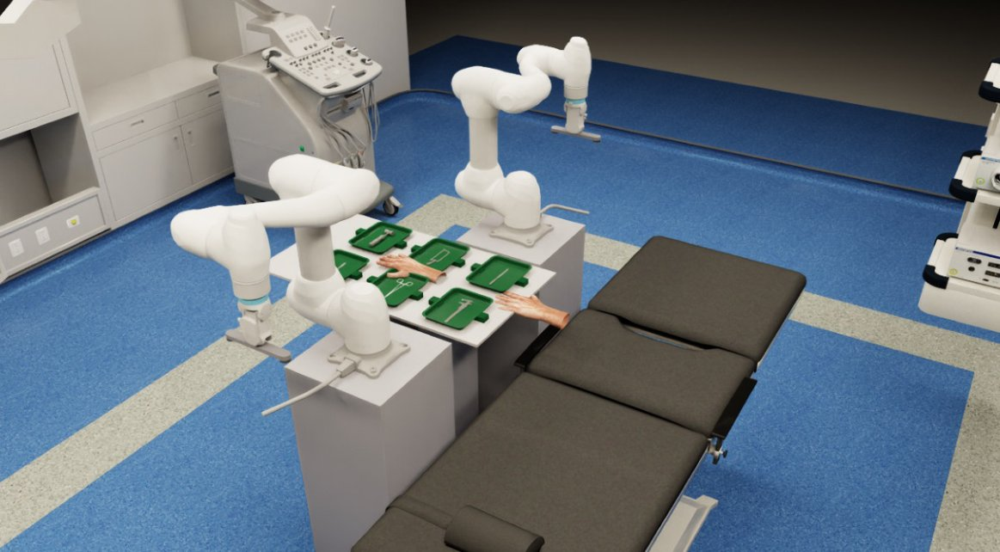
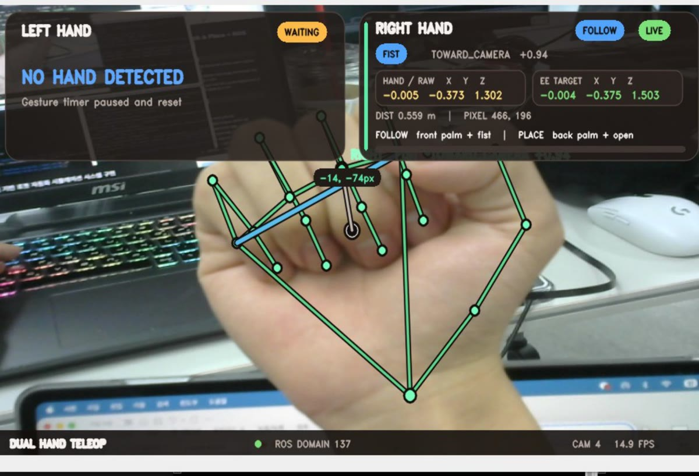
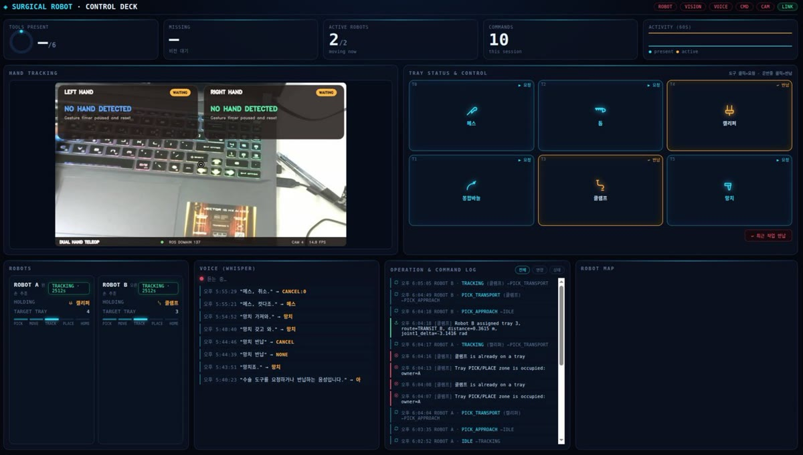
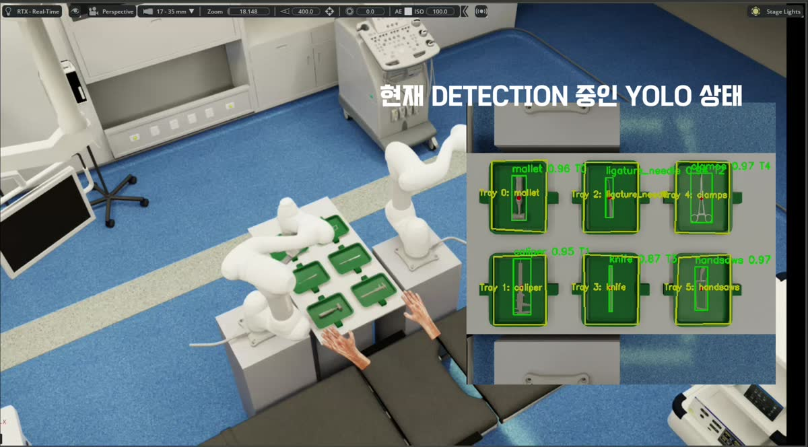
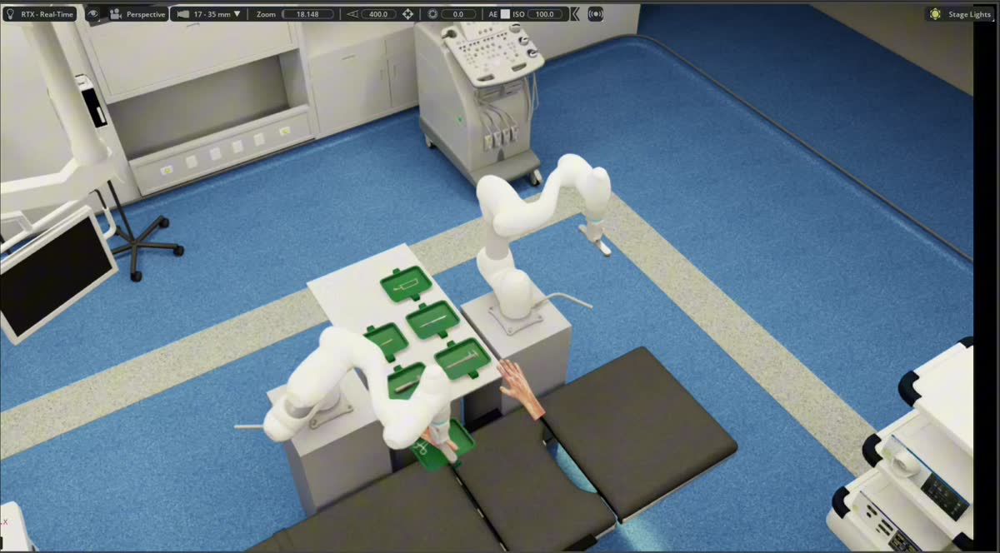
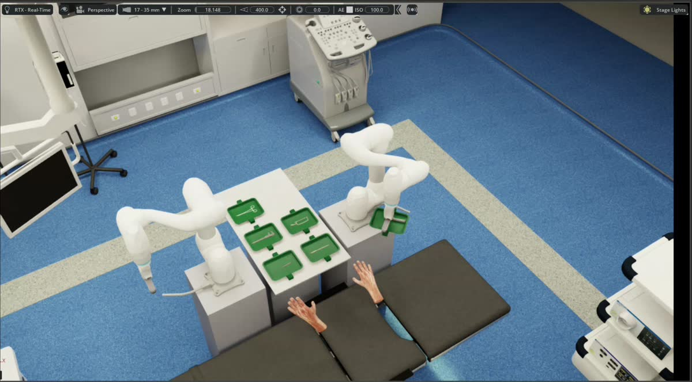
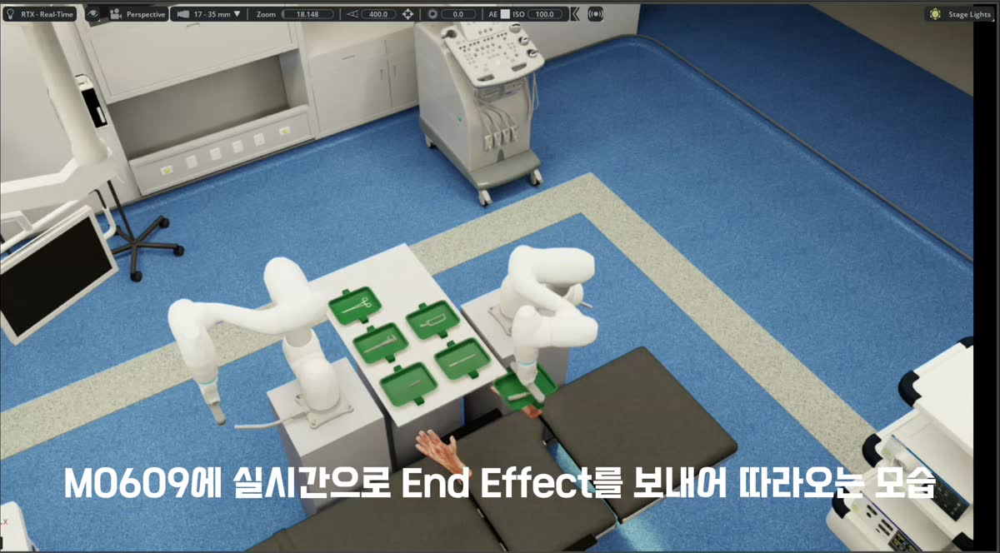
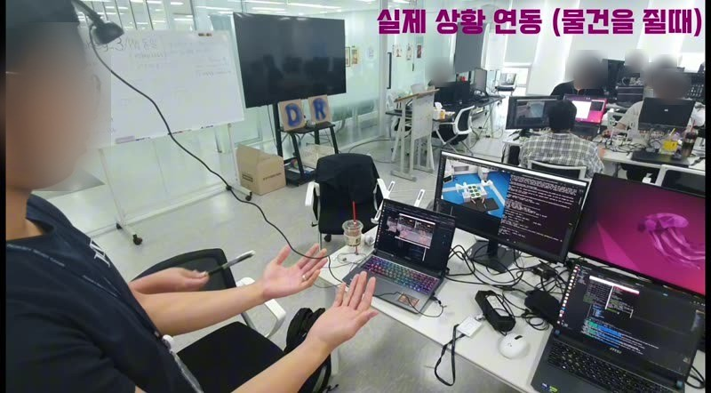
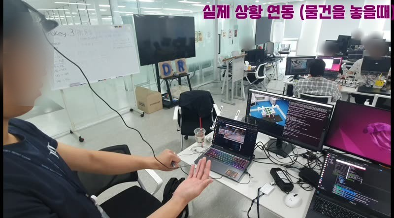

한눈에 보기
1분 시연 영상
- 팀은 집도의의 손 동작과 음성 명령에 따라 두 대의 협동로봇이 수술도구를 전달하는 과정을 로봇 시뮬레이터(Isaac Sim) 안에서 구현했습니다.
- 3인 팀의 팀장으로 다음을 맡았습니다.
- 시스템 구조 설계
- 도구 탐지
- ROS 2(로봇 프로그램끼리 메시지를 주고받게 하는 미들웨어) 환경 구성·연결
- 팀에서 진행한 Replicator(시뮬레이터 안에서 학습 이미지를 만드는 도구) 합성 데이터 생성·도구 인식 모델 학습에 참여
- 두산로보틱스 ROKEY 부트캠프 팀 프로젝트(26.06.17~26.06.30, 주말 포함 14일)이며, 실물 장비 없이 시뮬레이터에서만 진행했습니다.
무엇을 만들었나
① 가상 수술실에서 두 로봇이 도구를 집어 전달

팀은 가상 수술실 테이블 위 트레이 6칸에 수술도구를 놓고, 협동로봇 두 대가 요청받은 도구를 집어 집도의 손 쪽으로 가져가거나 트레이에 돌려놓도록 했습니다.
요청이 들어오면 작업 관리 프로그램이 도구가 있는 트레이를 찾아 두 로봇 중 하나에 작업을 맡기고, 두 로봇이 함께 쓰는 트레이 구역은 한 번에 한 로봇만 쓰게 합니다.
② 손 동작·음성·화면 클릭으로 요청


팀은 집도의 역할을 맡은 사람이 마이크에 도구 이름을 말하거나 웹 화면에서 트레이를 눌러 도구를 요청하고 반납하도록 했습니다.
도구를 든 로봇은 웹캠으로 추적한 손 위치를 따라오고, 손 모양을 바꾸면 도구를 트레이로 돌려놓습니다. 로봇·트레이 상태와 명령 처리 결과는 웹 대시보드에 함께 표시됩니다.
③ 트레이별 도구 인식
시뮬레이터 카메라 영상에서 도구 인식 모델(YOLO)이 도구를 찾고, 미리 지정한 트레이 구역 6칸에 하나씩 배정해 어느 칸에 어떤 도구가 있는지 ROS 2 메시지로 보냅니다. 이 정보는 웹 대시보드의 트레이별 도구 상태로 표시됩니다.
이 인식 부분의 설계와 학습 데이터를 바꾼 과정은 진행 과정에 적었습니다.
진행 과정
부트캠프가 준 디지털 트윈(실제 설비를 가상 공간에 옮겨 시험하는 방식) 시뮬레이션 과제 안에서, 수술 뒤 기구 파편이 체내에 남는 사고 보도를 계기로 팀 회의에서 수술도구 분실과 교차 오염을 줄이고자 수술도구 전달을 주제로 골랐습니다.
의료 현장에는 완전 자동화보다 사람을 돕는 협동로봇이 맞다고 보고 범위를 잡았습니다.
도구 인식 학습 데이터 전환(팀 작업 참여)
팀은 실물 도구 사진으로 학습한 인식 모델이 시뮬레이터 속 가상 도구를 찾지 못하자 사전학습된 모델을 시뮬레이터 환경에 맞춘 합성 데이터로 추가 학습해 트레이 6칸의 도구를 찾게 했고, 저는 이 인식 부분의 설계를 맡고 데이터 생성·학습에 참여했습니다.
프로젝트 6~7일차(주말 제외)에 오픈소스 실물 수술도구 사진으로 학습한 도구 인식 모델(YOLO, 영상 속 물체를 찾는 모델)을 시뮬레이터에 붙였지만, 가상 도구를 제대로 찾지 못했습니다. 카메라가 찾아야 할 대상은 시뮬레이터 안의 3D 도구 모델이었는데, 학습에 쓴 것은 실물 도구 사진이었습니다. 팀은 실패 요인을 분석하여 흰색·검정 배경 위주의 학습 사진과 초록색 트레이 환경의 차이를 주된 원인으로 정리했습니다. 작고 얇은 도구 형상, 도구 자세와 환경의 다양성 부족도 함께 꼽았고, 데이터의 양보다 학습 데이터와 실제 작업 환경의 차이가 문제라고 보았습니다. 돌아보면 검증 데이터(학습한 모델을 시험하는 데이터)도 같은 오픈소스 데이터셋 안에서 나눴고, 시뮬레이터 화면으로 미리 확인하지 않고 적용한 쪽에 가까웠습니다.
그래서 팀은 시뮬레이터에서 실제로 쓰는 3D 도구 모델과 트레이 환경에 맞춘 합성 데이터를 Replicator(시뮬레이터 안에서 학습 이미지를 만드는 도구)로 만들어, 사전학습된 YOLO 모델을 합성 데이터로 파인튜닝(이미 학습된 모델을 새 이미지로 추가 학습)했습니다. Isaac Sim과 Replicator는 처음이라 강사와 부트캠프 자료로 익혔으며, 저는 3D 도구 모델과 트레이 배경을 기준으로 가상 카메라를 구동해 학습 이미지를 만들고 모델을 학습하는 팀 작업에 참여했습니다.
그 모델로 트레이 구역 설정(화면에서 트레이 칸 위치를 지정하는 작업)까지 이어 갔습니다. 저는 이 인식 부분의 설계를 맡았습니다. 인식 시스템은 찾은 도구를 미리 지정한 트레이 구역 6칸에 배정해 어느 칸에 어떤 도구가 있는지 전달하고, 트레이 칸 위치는 인식 코드 안에 고정하지 않고 사람이 화면에서 칸마다 꼭짓점 4개를 클릭해 지정하는 설정 파일로 따로 둡니다. 카메라나 테이블 배치가 바뀌어도 인식 코드를 고치지 않고 칸 위치만 다시 잡을 수 있게 한 구성으로, 6칸을 모두 채워야 저장되고 잘못 찍은 칸은 다시 지정할 수 있습니다. 이 칸 지정 도구는 팀원이 만들었습니다.

그 결과 시뮬레이터 카메라 영상에서 트레이 6칸의 도구를 찾아 이름과 상자로 표시하게 됐습니다. 전 과정은 시뮬레이터 안에서만 확인했고 실물 도구·환경에서는 검증하지 않았습니다.

학습 데이터를 바꾼 이 경험에서 검증 데이터는 실제 사용 환경에서 뽑아야 한다는 것을 배웠습니다.
네 번의 병합으로 두 로봇 시스템 통합
팀은 네 번의 병합으로 각자 만든 기능을 합쳐 두 로봇이 도구를 전달하는 시나리오까지 시뮬레이터에서 확인했고, 저는 팀장으로 시스템 구조 설계와 ROS 2 연결을 맡았습니다.


3인이 손 추적, 음성 명령, 도구 인식, 로봇 작업 관리를 각자 맡아, 주말 포함 14일 안에 한 시스템으로 합쳐야 했습니다. 팀은 전체 일정을 사전 기획(목표·시스템·기술 요구사항 결정) 뒤 네 번의 병합(각자 만든 기능을 합쳐 확인하는 단계)으로 나누었습니다. 그리고 로봇 한 대(A)의 전체 작업 흐름을 먼저 확인한 다음 두 번째 로봇(B)을 붙였습니다.
병합은 단계별로 확인 대상을 나누어 진행했습니다. 1차 병합에서는 음성 명령으로 트레이를 옮기는 시험과 손 추적 기능 완성, 그리퍼 선정을 진행했고, 2차 병합에서는 도구 인식 카메라 설계와 도구 모델 설정, 로봇 상태 설계, 작업 취소·반환 명령을 다뤘습니다. 3차 병합에서는 로봇 A의 전체 흐름 검증과 로봇 B를 추가한 시나리오 시험, ROS 2(로봇 프로그램끼리 메시지를 주고받게 하는 미들웨어) 최적화와 예외 상황 시험을 거쳤으며, 4차 병합에서 기능 간 점검과 문서화, 로봇 최종 동작을 확인했습니다. 저는 팀장으로서 전체 시스템 구조를 설계하고 ROS 2 환경 구성과 연결을 맡았습니다. 병합 과정에서는 팀 토의 일정을 조율하고 알고리즘 개선에도 참여했습니다.



기능을 각자 따로 개발하더라도 정해 둔 병합 시점마다 합쳐 확인하고, 한 대의 흐름을 먼저 굳힌 뒤 늘리는 순서로 통합 위험을 분산하는 진행 방식을 익혔습니다.
결과적으로 팀은 손 동작·음성 요청을 받아 두 로봇이 도구를 전달하는 시나리오와 트레이 6칸의 도구 인식을 시뮬레이터 안에서 확인했습니다. 실물 장비 없이 진행해 실제 로봇과 수술도구로는 검증하지 않았습니다.
팀에서 일한 방식
역할은 각자 맡고 싶은 분야와 이미 아는 분야를 기준으로 나눴습니다. 저는 YOLO 학습 경험이 있어 도구 탐지를 맡았고, 팀장으로서 시스템 구조를 설계했습니다.
주말에도 매일 만나 함께 개발했고, 방향이 막히면 그 자리에서 짧게 회의해 정했습니다.
팀 협의로 바꾼 결정도 여럿이었습니다.
- 그리퍼: 기존 손가락 두 개짜리 그리퍼(RG2, 물체를 잡는 로봇 손)는 크기가 작고 힘을 조절하기 어려웠습니다. 트레이를 들기 힘들고 수술도구를 집기에도 불편해, 시뮬레이터 안에서 두 면으로 흡착하는 그리퍼를 만들어 바꿨습니다.
- 배치: 실제 수술실을 닮게 하면서 두 로봇이 나란히 일할 수 있도록, 로봇을 직각으로 세우는 안과 테이블 위치를 놓고 토의해 최종 위치를 정했습니다.
- 연산 자원: Isaac Sim 렌더링 렉과 프레임 드랍이 있어 시뮬레이션 에셋(가상 도구·환경 모델) 해상도와 GPU(시뮬레이션·학습 연산을 맡는 장치) 자원 분배를 조정했고, GPU를 더해 노트북 두 대를 랜선으로 연결했습니다.
배운 점
저는 도구 인식 모델이 시뮬레이터 속 도구를 찾지 못했던 경험에서, 모델을 시험할 검증 데이터는 실제로 쓸 환경에서 뽑아야 한다는 것을 배웠습니다. 팀장으로 네 번의 병합을 거치면서는, 기능을 각자 따로 개발하더라도 정해 둔 병합 시점마다 합쳐 확인하고 로봇 한 대의 흐름을 먼저 굳힌 뒤 두 번째 로봇을 붙이는 순서로 통합 위험을 나누는 진행 방식을 익혔습니다. 개별 기능이 실제 동작 환경이나 전체 시스템과 맞물릴 때 생기는 차이는 그렇게 합쳐 봐야 드러났습니다.
기술 상세
시스템 흐름 펼쳐 보기
팀 시스템은 손 추적(MediaPipe, 카메라 영상에서 손 관절 위치를 찾는 라이브러리)과 음성 명령(음성 인식 결과를 LLM(대규모 언어 모델)이 명령으로 해석)을 입력으로 받아, 작업 관리자가 두 로봇에 도구 집기·반납 작업을 나눠 주고 상태를 관리합니다. 도구 인식 프로그램(노드)은 카메라 영상에서 YOLO로 도구를 찾아 미리 지정한 트레이 구역에 배정하고, 어느 트레이에 어떤 도구가 있는지를 ROS 2 메시지로 보냅니다. 손 추적·음성 명령·웹 대시보드는 팀원이 맡은 부분입니다.
참고 문서
팀 발표 자료(세부 기술): 발표 자료(PDF, 66쪽)
코드 근거
Rokey_cobot3 — 팀 최종 코드의 제출 스냅샷(README가 코드 구성과 공개하며 바꾼 점을 설명합니다)